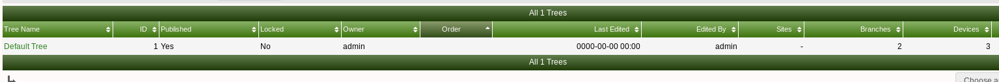
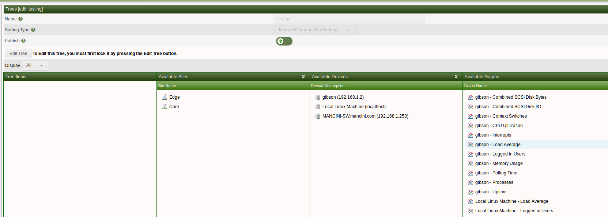

This section will describe Tree management in Cacti.
Trees in cacti are used to place graphs and devices on trees are organized by name.
Below we can see the current trees we have setup on our cacti server. To get to this screen click console >> managment >> trees.
From this page you can add or remove trees as you need

Below is how a tree is displayed in graph view. We can see the device that is being monitored - clicking on this device will result in seeing all of the graph data generated for the device.
To create a new tree simply click the + on the top right hand corner and enter a name for your tree. After the tree has been created you will see the below page where you are able to add devices to the tree.

To add devices to the new tree simply drag an avaliable device to the tree and it will be added to the tree
Copyright (c) 2004-2020 The Cacti Group